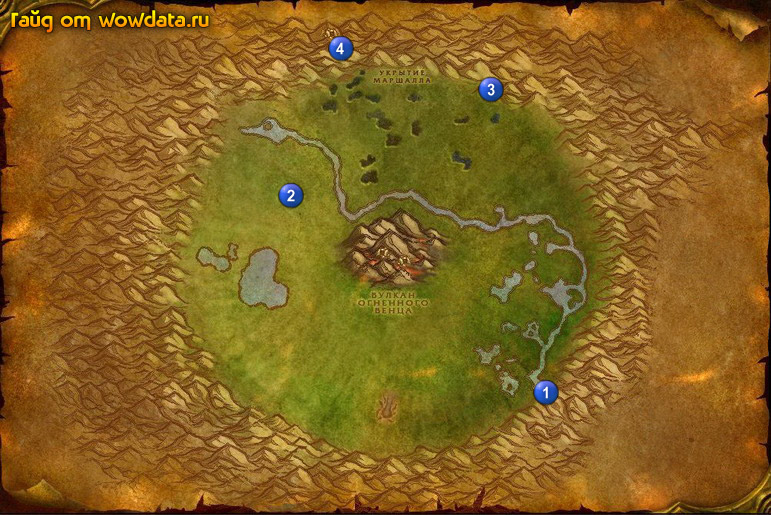

1) Начните <Могучая Уча> 1 (71, 76).
2) Собирайте кучки грязи если вам надо больше [Рассветница].
3) Делайте <Долгий путь слизнюка>, тварей вы можете найти в центре кратора или например в точке 2 (37, 37}.
4) Идите в пещеру 3 (64, 16), в пещере идите направо, когда увидите Чи-Та 3 начните <В поисках Чи-Та 3>. И закончите его.
5) В пещере ищите У'ча для <Могучая Уча>.
6) Вернитесь к сломанной горилле и начните <В поисках Чи-Та 3>, теперь сопровождайте ее. И закончите квест.
7) Закончите <Меч Линкена> 4 (45, 8), начните <Помощь гномов>.
8) Идите в пещеру 4 (44, 7) и в конце закончите <Помощь гномов>, начните <Память Линкена>.
9) Идите закончите <Могучая Уча> 1 (71, 75).
10) Вернитесь по камню в Астранаар и летите в Дарнасс.
11) В храме луны наполните [Фиал Эриданы] для <Дерева в узах скверны>.
12) Отправляйтесь в Оскверненный лес.